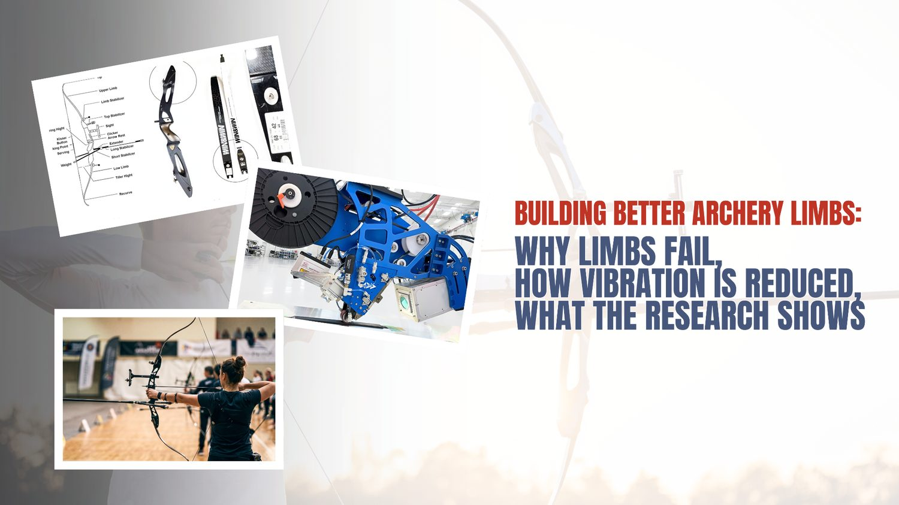
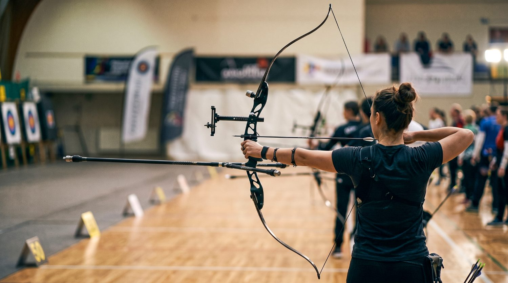
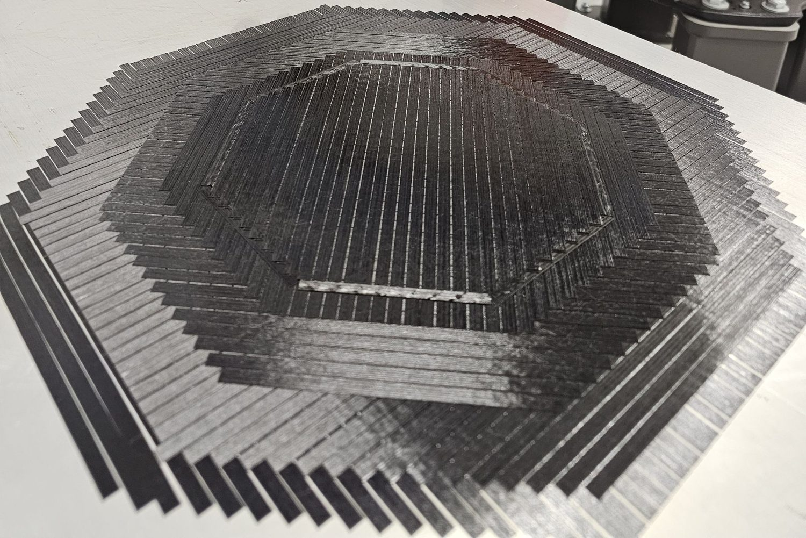
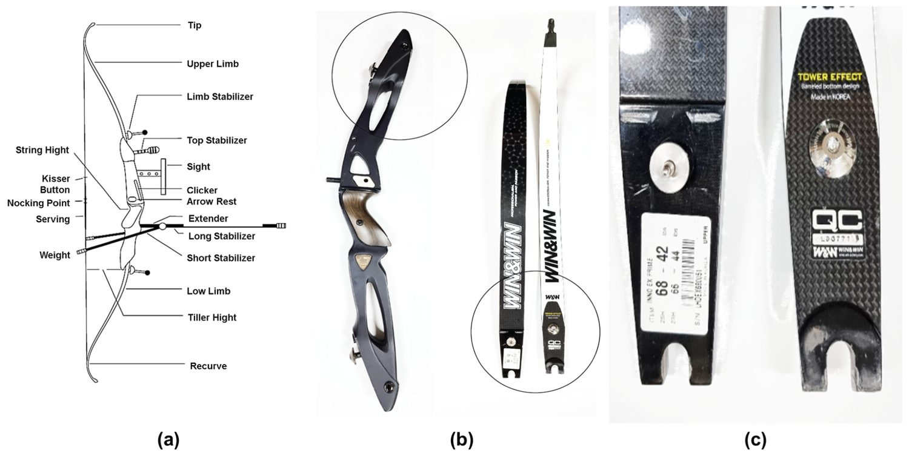
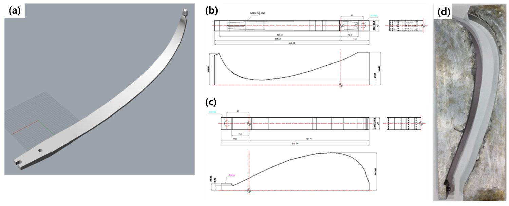
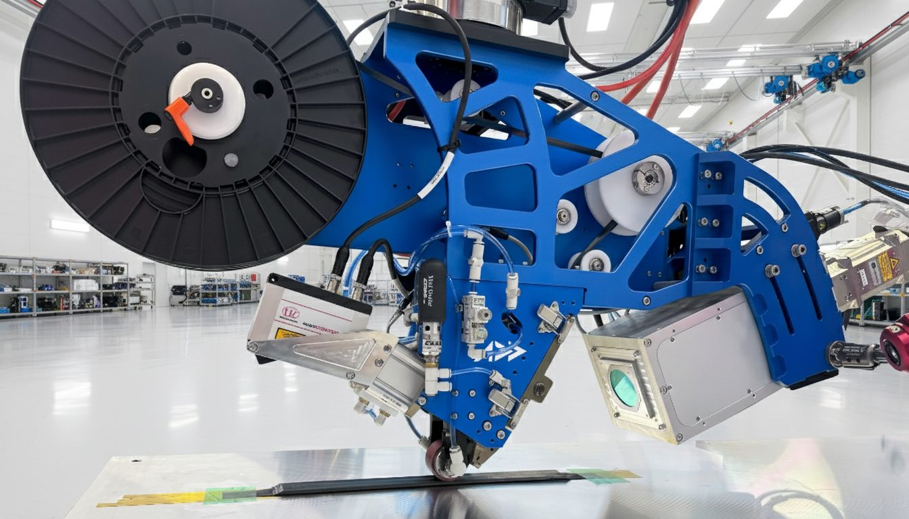
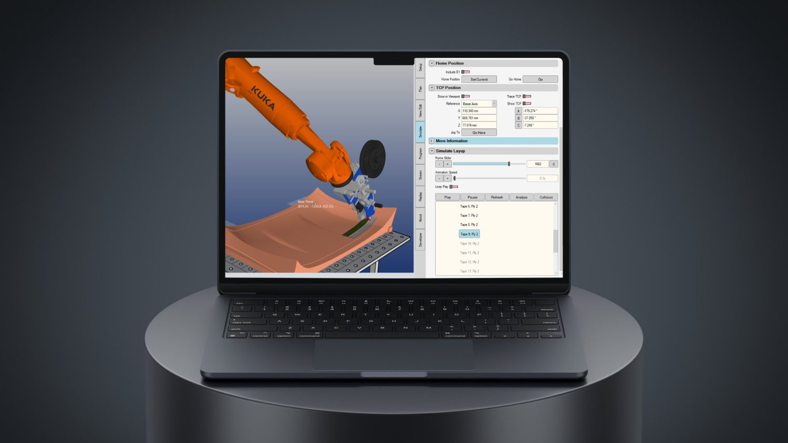
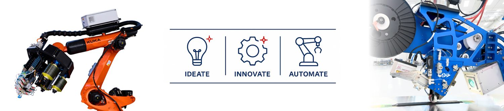

Why Elite Archers Fear a Broken Limb, and How Layup Quality Is Engineering the Vibration Out of the Bow

A top-level archer typically brings a spare bow to a competition because hardware can fail, and a failure mid-match is close to unrecoverable. As the authors of the study behind this post frame it, a limb that breaks during a match doesn't just cost a part — it can leave the athlete at a psychological disadvantage at exactly the moment when steadiness is everything.

An elite recurve archer at full draw — the moment when limb stiffness, stabilizer damping, and steadiness all have to hold at once.
That is the practical backdrop against which archery limbs are engineered. According to the authors, competitors are acutely sensitive to two properties of their equipment above almost all others: how long it survives, and how much it vibrates after the string is released. A limb that fails, or a bow that buzzes after the shot, both erode the precision the sport demands.
The study we are looking at here — Manufacture and Vibration-Damping Effect of Composites for Archery Carbon Fiber-Reinforced Polymer Limb with Glass Fiber-Reinforced Polymer Stabilizer, by Heo and colleagues, published open-access in Materials in 2023 — takes those two anxieties and treats them as an engineering problem. The team manufactured carbon fiber-reinforced polymer (CFRP) limbs, paired them with a glass fiber-reinforced polymer (GFRP) stabilizer of their own making, and ran the result through mechanical testing, finite-element simulation, and live shooting vibration measurements.
Our perspective
For anyone building flex-critical sporting structures out of composites, this is a compact case study in how layup and consolidation quality translate into the two things a customer actually feels — parts that last and parts that stay quiet. We'll return to that thread at the end.
A note on sourcing. Everything attributed to "the paper," "the authors," or "the study" comes from Heo, An, Yeum, Yang & Choi (2023), cited in full at the end. Sections labelled "Our perspective" are Addcomposites' own editorial commentary and are not claims made by, or endorsed by, the paper's authors.
Two enemies: fatigue failure and post-release vibration
According to the authors, the traditional material for both limbs and stabilizers in this class of bow has been Bakelite. Its damping behaviour is genuinely good, but the paper identifies real trade-offs: it isn't dense, and on both stiffness-under-load and fatigue life it trails the stiffer structural composites archers now expect. Over repeated draw-and-release cycles, the authors point to delamination as the mechanism that eventually undermines fatigue strength — the plies separate, and the part degrades.
That single observation — delamination drives the fatigue failure — is the hinge the whole study turns on. Our reading: if interlaminar quality is what fails, then interlaminar quality is what any better manufacturing route has to protect.
The second enemy is vibration. The paper explains that releasing the string turns the limb's stored strain into motion almost instantly. Whatever isn't spent driving the arrow lingers as shake — and that leftover motion is what nudges a shot off line. The stabilizer's job is to soak up and cancel that shake, and secondarily to let the archer rebalance the bow by relocating where its mass sits.
Here is the split in roles, as the authors describe it:
Heo, An, Yeum, Yang & Choi (2023) · functional role split
The bow, functionally
Two structural roles in tension: the limb must launch the arrow; the stabilizer must cancel what that launch leaves behind.
- Stores & releases energy bends under draw, springs back
- Launches the arrow this is the primary function
- Generates vibration an unavoidable side effect of release
- Absorbs & cancels vibration damps the oscillation after release
- Tunes balance and centre of gravity
So the design challenge is twofold and slightly in tension: the limb must be stiff, tough, and fatigue-resistant, while the stabilizer must be an effective damper without giving up the durability that Bakelite lacks. The authors' proposed answer is CFRP for the limb and a purpose-made GFRP part for the stabilizer.

Carbon-fiber plies laid up at alternating angles — the stepped courses show how fiber direction is placed and sequenced layer by layer, the variable that decides how a flex structure holds up.
The materials on the bench
The paper reports that the limbs were built from unidirectional (UD) carbon fiber prepreg, with the reinforcement sourced from Toray, and that three different prepreg suppliers were compared head-to-head so the team could see which one produced the best limb. A plain-weave carbon prepreg (using Mitsubishi Rayon fiber, converted by Hyundai Fiber) served as the outer skin material, and a 7628-style glass fabric prepreg was used to build the GFRP stabilizer.
Rather than reproduce the paper's specification table verbatim, here is the same information redrawn as a comparison of the five test articles the authors made:
Heo, An, Yeum, Yang & Choi (2023) · test articles
Five test articles on the bench
Three carbon prepreg suppliers for the limb, two glass-fabric gauges for the stabilizer — #C2 went on to become the built limb.
Limbs carbon
Stabilizers glass
Editorial note (Addcomposites): the paper contains an internal inconsistency in which supplier is tied to sample #C2 — its specification table and its results text name different companies for the same sample code. Because the identity of the winning supplier is ambiguous in the source, we refer to the best limb only by its sample code, #C2, which the authors consistently identify as the top performer. We flag this so readers don't propagate a supplier claim the paper doesn't cleanly support.
The authors' stated reason for pairing carbon with glass, rather than carbon alone, is practical: according to the paper, glass co-cured against carbon bonds and forms well, finishes without fuss, and gives the fabricator room to tune gauge, appearance, and material choice — useful properties for a part that has to be both functional and saleable.

Every part of a recurve bow named and mapped out, shown next to photographs of real bow limbs and a carbon stabilizer — putting the limb-versus-stabilizer role split onto physical hardware. Figure 1 from: Heo, W.W.; An, S.K.; Yeum, J.H.; Yang, S.B.; Choi, S. "Manufacture and Vibration-Damping Effect of Composites for Archery Carbon Fiber-Reinforced Polymer Limb with Glass Fiber-Reinforced Polymer Stabilizer." Materials 2023, 16, 4048. https://doi.org/10.3390/ma16114048 — © 2023 by the authors. Licensed under CC BY 4.0 (https://creativecommons.org/licenses/by/4.0/).
How the limbs were built: one-shot autoclave co-cure
Our perspective
This is where the manufacturing detail matters, because it's the step that either preserves or wrecks the interlaminar quality the paper cares about.
The paper describes a vacuum-bagged autoclave process. The stack was built on a release-treated steel mould, with the outermost layers formed from two UD carbon sheets oriented at 45° in a plain-weave arrangement, and the interior filled with 90°-oriented UD carbon plies from the supplier under test — twelve plies in total. The bagged assembly was then cured under vacuum with added pneumatic pressure, held for two hours, and then brought down to about 30 °C with a water-cooling step before demoulding.
Drawn as a cross-section through the bag, the arrangement looks like this:
Heo, An, Yeum, Yang & Choi (2023) · vacuum-bag process
One-shot autoclave co-cure
Limb and stabilizer laminated and cured together in a single cycle — no secondary bond line.
(The vacuum level is stated in the paper's process figure; we've left the exact pressure figure to the source to avoid misquoting the units, which appear inconsistently between the text and the figure.)
The stabilizer wasn't bonded on afterwards. The authors explain that once the best carbon prepreg (#C2) was identified, the limb was laminated with that carbon at 90° between plain-weave carbon skins — with two thin maple-leaf inserts epoxied between the UD layers — and the stabilizer materials were laid onto the outer surface in the same operation. Everything was then co-cured in a single autoclave cycle, producing the limb and stabilizer as one integrated part.

A 3D render of the finished limb, dimensioned CAD drawings of the upper and lower molds, and a photograph of the curved aluminium tooling the layup is cured against — the shape data traced back to a 3D-scanned bow limb. Figure 3 from: Heo, W.W.; An, S.K.; Yeum, J.H.; Yang, S.B.; Choi, S. "Manufacture and Vibration-Damping Effect of Composites for Archery Carbon Fiber-Reinforced Polymer Limb with Glass Fiber-Reinforced Polymer Stabilizer." Materials 2023, 16, 4048. https://doi.org/10.3390/ma16114048 — © 2023 by the authors. Licensed under CC BY 4.0 (https://creativecommons.org/licenses/by/4.0/).
Our perspective
Co-curing in one shot is attractive precisely because it removes a secondary bond line — and secondary bonds are classic initiation sites for the delamination the paper blames for fatigue failure. The catch is that a one-shot cure only pays off if every ply lands where it should and sees consistent consolidation pressure. That is exactly the variable that hand layup struggles to hold identical from limb to limb.
Choosing the winning prepreg: voids, cross-sections, and mechanicals
Before committing to a supplier, the team characterised each candidate. The paper reports three converging lines of evidence.
First, fiber volume fraction (FVF). The authors calculated the theoretical FVF for each carbon and found sample #C2 came out highest. They tie this to resin content: #C2 also carried the lowest resin fraction, and the authors reason that with less resin in the stack there is simply less material in which bubbles can get trapped as the plies are laid up and cured — and fewer voids generally means better mechanical behaviour. As a bonus, a lighter specimen at equal performance is the more attractive engineering choice.
Second, electron microscopy. According to the paper, scanning electron microscopy showed #C1's section pocked with tiny pinholes, whereas the other two carbons came out of the cure denser and visibly cleaner. The authors are candid about why voids are so hard to eliminate here: because UD tapes lie flat with no weave to vent gas, and because some of the resin's volatiles stay locked in through the cure, a little porosity is hard to design out of this particular process.
Third, mechanical testing to ASTM standards. The authors ran tension (ASTM D638), flexure (ASTM D790), and compression (ASTM D695) on five specimens per group using an Instron universal testing machine. The headline result: #C2 led on flexural strength, compressive strength, flexural modulus, and compressive modulus, while a different sample edged it only on tensile modulus. On that basis the team selected #C2 for the actual limb.
Here is the void-quality story from the SEM work, as the authors reported it:
Heo, An, Yeum, Yang & Choi (2023) · SEM cross-sections
Void content separated the winner
Scanning electron microscopy: #C1 came out pocked with pinholes; #C2 and #C3 cured dense and clean — #C2 also carried the lowest resin fraction and highest fiber volume fraction.
Reading is qualitative (authors' SEM assessment, not a measured void-content number) — #C1 was dropped from further mechanical testing on void grounds alone.
Figures 5, 6 and 7 in the paper carry the underlying data: the FVF and resin/weight comparisons, the SEM micrographs of all five composites, and the full stress–strain families for tension, flexure, and compression across the three carbons.
Swapping Bakelite for glass in the stabilizer
With the limb settled, the authors turned to the stabilizer itself and compared their GFRP part against the incumbent Bakelite.
The paper reports that in tension, the glass composite beat Bakelite on strength, modulus, and elasticity. In bending, GFRP again showed higher strength and modulus — and the authors offer a functional interpretation: if the stabilizer gives under even modest load, the bow feels vaguer in the hand as the archer reaches full draw, so the stiffer glass part is the more confidence-inspiring choice. In compression the picture split: Bakelite tolerated more compressive strain, but the glass composite carried higher compressive strength.
Our read
Taken together, these bench results make the GFRP stabilizer the more durable structural part, which addresses the durability half of the paper's original problem statement. The vibration half needed simulation and live testing to settle.
Figure 8 in the paper shows the tensile, flexural, and compressive curves for the Bakelite and GFRP stabilizers side by side.
Simulating the shot before building it
The authors describe using Catia to build a finite-element model of the limb, reverse-engineered by 3D-scanning a Win&Win limb — picked because that limb is one competitive archers reach for more than almost any other. The virtual test mirrored a real shot: the stabilizer end was constrained to the handle, and the curved tip was drawn roughly 50–100 mm in the Y direction, then released, so the team could watch how load and vibration moved through the structure.
The material card the authors fed the CFRP model, taken directly from the paper, was: Young's modulus 1.35 × 10¹1; N·m⁻², Poisson's ratio 0.46, density 1600 kg/m³, and yield strength 1.3 × 10&sup9; N·m⁻².
The design itself, according to the paper, breaks into three functional zones — the part that clamps to the handle, a flat mid-section, and the curved working length:
Heo, An, Yeum, Yang & Choi (2023) · FEA model geometry
Three zones, one flex structure
Reverse-engineered from a 3D-scanned Win&Win limb — the curved tip is where the simulation shows load and vibration concentrating at full draw.
The simulation's qualitative finding: when the string is drawn fully (~100 mm) and released, the bending load migrates toward the curved tip, and that tip is where the damping behaviour of the stabilizer choice shows up most clearly.
Figure 9 in the paper visualises this as a sequence — commercial reference, 50 mm draw, 100 mm draw, and the post-shot state — with the stress field mapped in colour along the limb.
The vibration verdict
This is the payoff. The paper reports two layers of vibration evidence: the simulated modal behaviour (tabulated as amplitude versus frequency for both stabilizer types), and then real shooting tests with a freshly built 68.42 lb limb, measured four times on the X, Y, and Z axes using a dedicated vibration receiver and standard arrows.
The simulation's nuanced conclusion is worth stating carefully, because it isn't a clean "glass wins everywhere." According to the authors, at full draw the vibration reaching the curved tip was lower with the GFRP stabilizer than with Bakelite — but the vibration transmitted into the stabilizer body was actually larger for glass. The reconciling observation is about shape, not just magnitude: the glass part actually starts with a larger raw amplitude, but it sheds that energy more gradually — its decay trace is rounder, without the sharp spikes and dips the Bakelite part showed. That gradual bleed-off is what an archer would feel as a cleaner, quieter release.
The live shooting test is where the numbers get concrete. The paper reports the following average post-release vibration on each axis, comparing the Bakelite baseline against two glass stabilizer thicknesses:
Heo, An, Yeum, Yang & Choi (2023) · live shooting tests
The vibration verdict
Four shots per axis with a freshly built 68.42 lb limb — GFRP 1.5mm cut vibration roughly 45% / 25% / 33% on X / Y / Z vs. the Bakelite baseline.
Average post-release vibration [m·s⁻², lower is better]
Vibration reduction vs. Bakelite [1.5mm GFRP stabilizer, higher = quieter]
GFRP 1.5mm is the consistent winner across all three axes — thinner 1.0mm trades a little damping for less material, but the 1.5mm stabilizer is the one that quiets the limb the most on every shot.
Reading straight off the authors' figures, the 1.5 mm glass stabilizer cut vibration by roughly 44% on X, 25% on Y, and 33% on Z relative to Bakelite. The team then thinned the glass part to 1.0 mm to shave weight, and found the penalty was modest: vibration rose only slightly versus the 1.5 mm version — on the order of 10, 100, and 150 m·s⁻² higher on X, Y, and Z respectively — while still landing about 42% / 20% / 21% below the Bakelite baseline.
Editorial note (Addcomposites): the paper's prose at one point describes that 10 / 100 / 150 m·s⁻² step as a comparison "to the previous Bakelite stabilizer," but the numbers themselves are the difference between the 1.0 mm and 1.5 mm glass parts (290−280, 1600−1500, 950−800). We present it as the glass-thickness comparison to keep the arithmetic honest.
The authors' bottom line, stated in their conclusion, is that across the tested axes the glass stabilizer delivered a meaningful average reduction in vibration versus Bakelite while resisting the durability loss that plagues the older material. They also close on an important caveat that we'd echo: equipment quality is necessary but not sufficient — the athlete still has to shoot well.
Figures 10, 11 and 12 in the paper carry the full modal simulations for both stabilizers, the per-axis average vibration traces, and the summarised improvement chart.
What this means for anyone building flex-critical composite structures
Everything above is the authors' work. This closing section is Addcomposites' own analysis, and the paper's authors neither reviewed nor endorsed it.
The single most transferable insight in this study isn't the archery result — it's the failure diagnosis. The paper names delamination as the root of fatigue failure, and it independently shows that void content separated the best carbon from the worst. Both of those are, at heart, layup-and-consolidation problems. Where plies sit, how cleanly they interface, and how uniform the consolidation pressure is across the part — those variables decide whether a flex structure survives ten thousand draw cycles or delaminates early.
That diagnosis generalises well beyond a bow. Ski poles, diving boards, vaulting poles, prosthetic feet, leaf springs — any structure whose entire job is to store and release bending energy lives or dies on interlaminar integrity, because the interlaminar planes are exactly where cyclic bending tries to pull the laminate apart.
To be clear about the method: the study used autoclave prepreg layup with a co-cure. That is a proven route, and the one-shot co-cure is genuinely smart for removing a secondary bond line. Our editorial point is about repeatability at volume. Hand layup can produce an excellent single limb; what it cannot easily guarantee is that limb #500 has the same ply positions, the same fiber angles, and the same consolidation as limb #1. And in a flex-critical sporting product, unit-to-unit consistency is the product — an elite athlete rejects a bow that feels different from the one they trained on.

The AFP-XS head laying carbon tow under programmatic control — the same placement and consolidation repeated identically, part after part, is what turns layup quality from an artisan variable into a controlled one.
This is where automated fiber placement (AFP) fits the problem the paper describes. Addcomposites' AFP-XS system places fiber under programmatic control, with repeatable ply positioning and consistent consolidation from part to part, and AddPath lets an engineer define and version that layup deterministically. Against the two failure modes this study surfaces — delamination and void content — controlled, repeatable placement is a direct lever: fewer hand-introduced gaps and overlaps, more uniform interlaminar quality, and a layup that can be reproduced identically across a production run.

AddPath sequences and simulates every tape and ply before production begins — the layup is versioned in software, so it reproduces identically across the run.
We're not claiming the archery limbs in this paper should have been made with AFP, nor that AFP would beat the authors' specific results — that's an untested comparison, and small curved limbs are their own tooling challenge. The honest, useful takeaway is narrower and stronger: the paper independently confirms that the properties elite athletes care about trace back to layup quality, and layup quality is precisely what automated placement exists to make consistent. For an OEM trying to move a premium flex-sports product from artisan batches to a repeatable line without surrendering the feel athletes trust, that connection is the whole conversation.
If you're developing flex-critical or vibration-sensitive composite structures and want to talk through how a programmable layup fits a repeatable production line, get in touch with the Addcomposites team →
Get in Touch with Addcomposites
Read the research
This article summarizes and comments on independent academic work. All technical findings belong to the original authors. We encourage you to read the open-access paper in full:
- Heo, W.W.; An, S.K.; Yeum, J.H.; Yang, S.B.; Choi, S. "Manufacture and Vibration-Damping Effect of Composites for Archery Carbon Fiber-Reinforced Polymer Limb with Glass Fiber-Reinforced Polymer Stabilizer." Materials 2023, 16, 4048. https://doi.org/10.3390/ma16114048 Published open access by MDPI. © 2023 by the authors. Licensed under the Creative Commons Attribution (CC BY 4.0) license: https://creativecommons.org/licenses/by/4.0/
The authors have not reviewed or endorsed this article, Addcomposites, or its products.